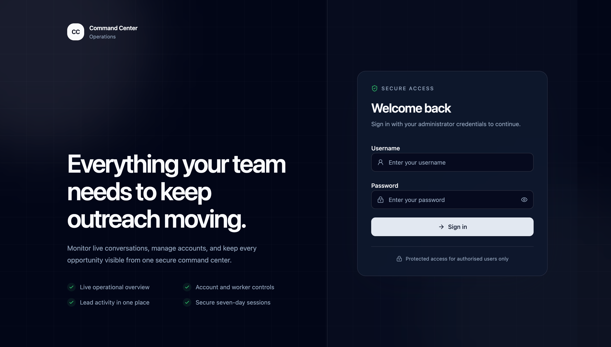
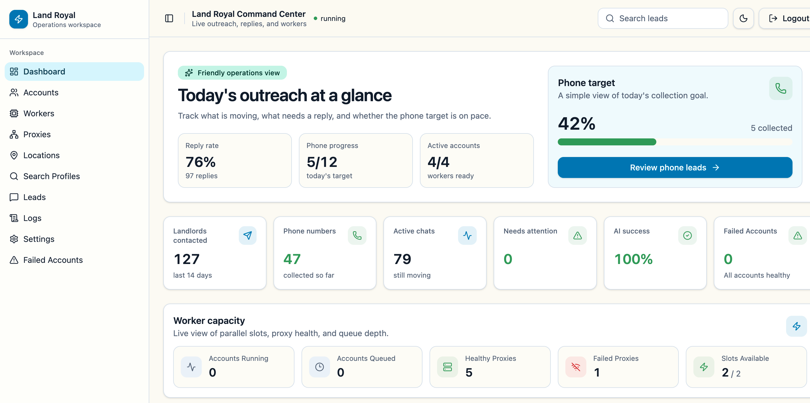
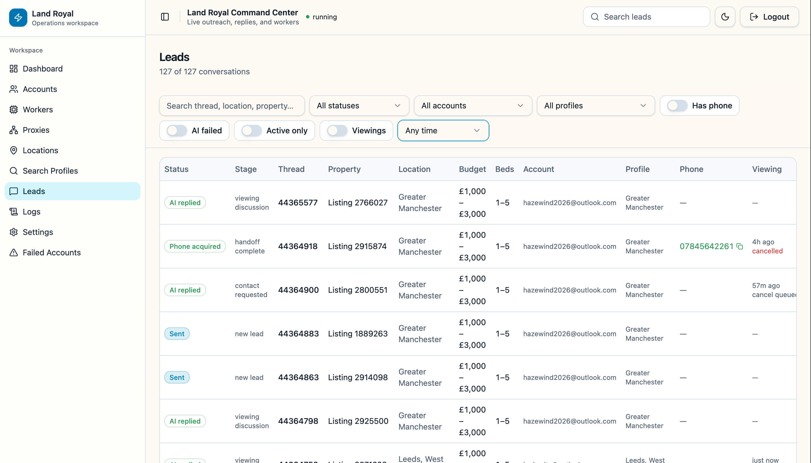
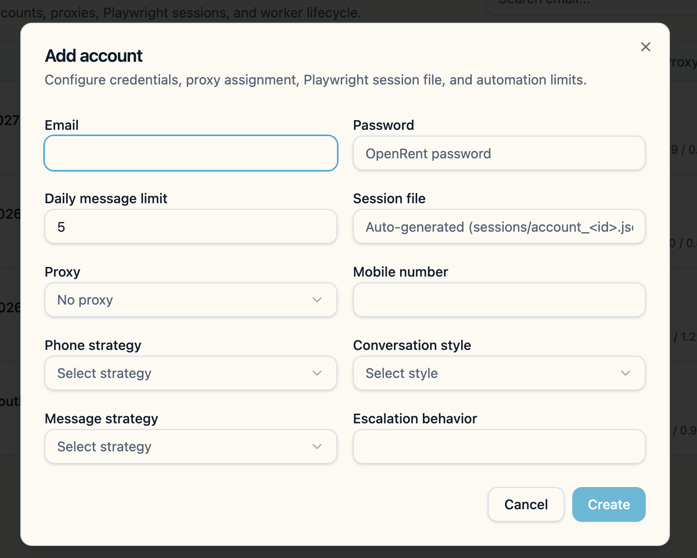
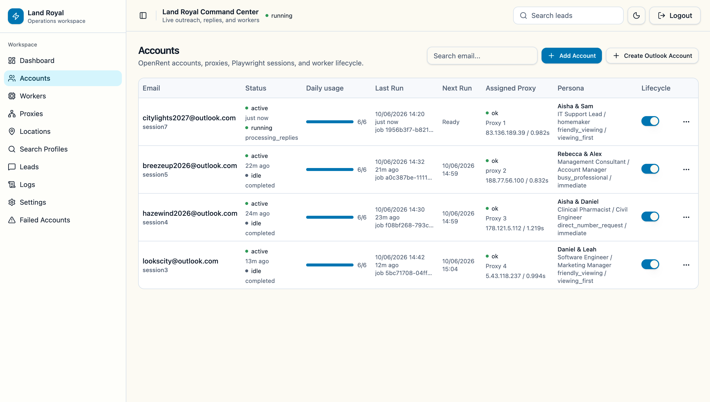
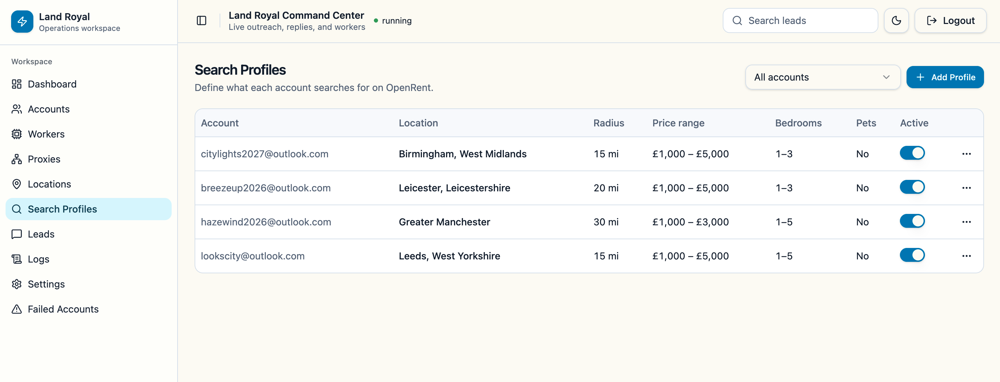
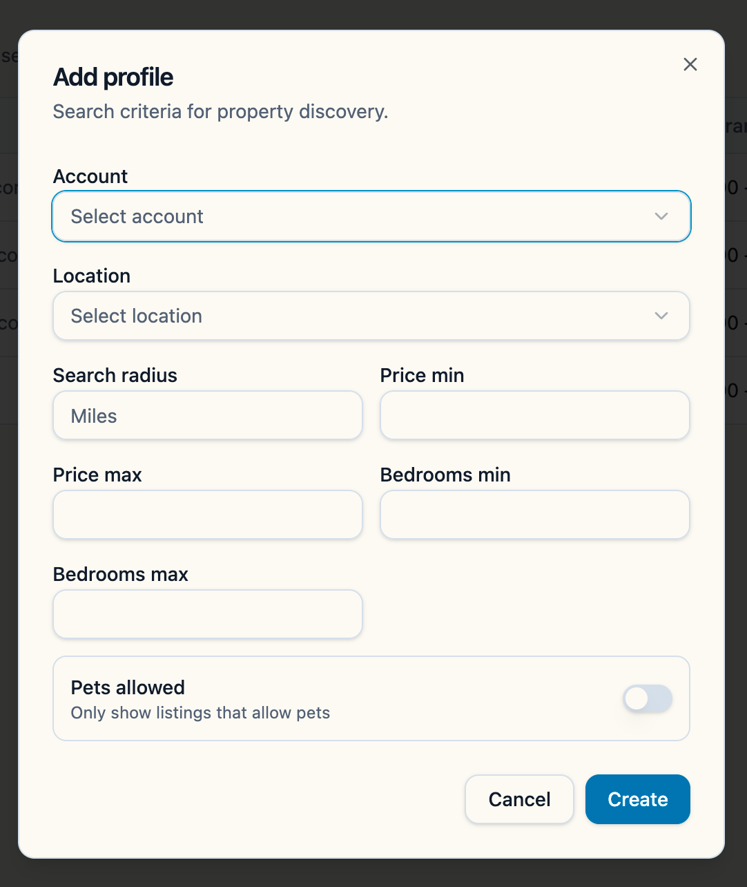
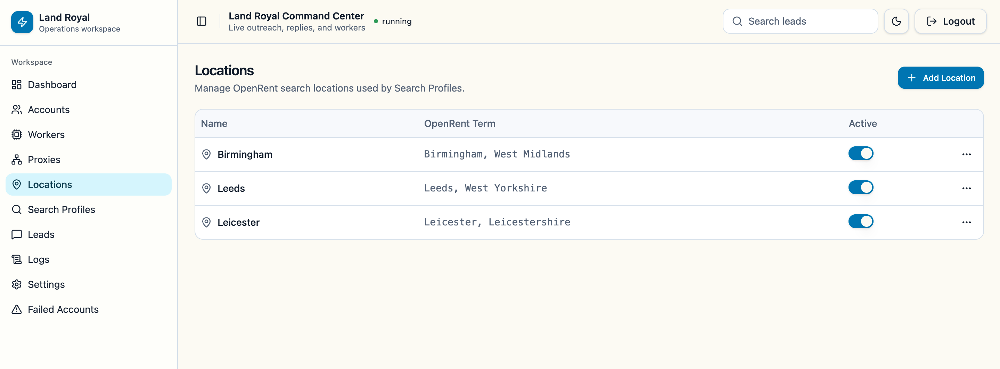
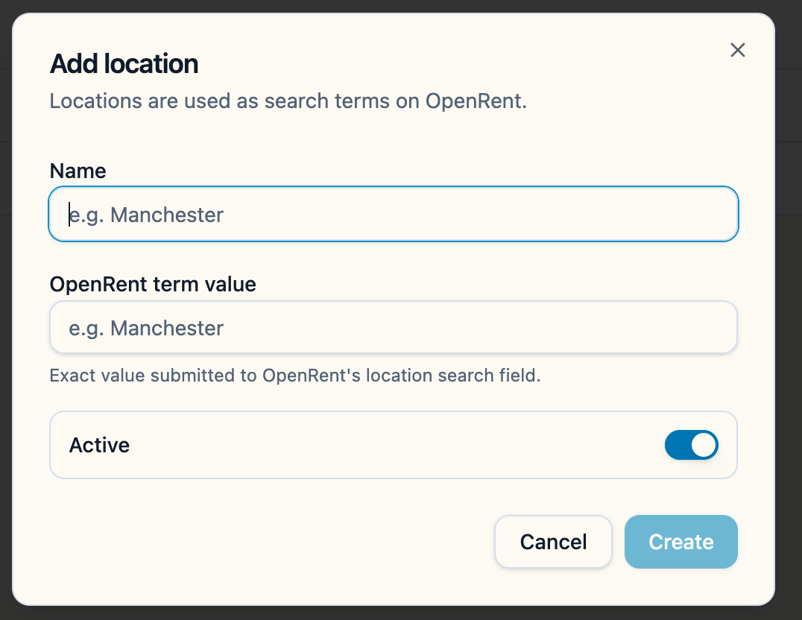

Client Handbook
Command Center
User Guide
A simple guide to monitoring activity, reviewing conversations, and keeping your property outreach running smoothly.
Prepared for everyday users • No technical knowledge required
Welcome
Start here
The Command Center gives you one place to see what the system is doing, review landlord conversations, and spot anything that needs attention.
1Check progress
See replies, phone numbers, active conversations, and today's activity.
2Review conversations
Open any lead to read the conversation and see key property details.
3Handle warnings
Use clear status labels to find accounts or workers that need attention.
Your normal daily routine is simple: check the Dashboard, review new Leads, then look at Failed Accounts or Workers only if you see a warning.
What is inside this handbook?
01Logging inPage 3
02Your daily routinePage 4
03Understanding the DashboardPage 5
04Reviewing leads and conversationsPage 6
05Accounts: adding and managingPages 7–8
06Search profiles and locationsPages 9–10
07Workers, warnings, and troubleshootingPages 11–12
Before making changes: if you are unsure about a setting, account, proxy, or worker action, contact your administrator first.
Land Royal Command Center2
Getting started
Logging in
The Command Center is a secure, access-controlled tool. Use the credentials provided by your administrator to sign in.

The login page. Enter your Username and Password in the fields shown, then click Sign in.
Use the login credentials your administrator has provided. Your username and password will be shared with you separately. Keep them confidential and do not share them with anyone else.
✓
Protected access
Only authorised users can access the system. Sessions are private and secure.
?
Can't log in?
Contact your administrator to receive or reset your credentials. Do not attempt to guess a password repeatedly.
Land Royal Command Center3
Everyday use
Your daily routine
Most days, you only need three sections: Dashboard, Leads, and Failed Accounts.
1Open Dashboard
Look for warnings and check today's progress.
2Review Leads
Check replies, phones, and viewings.
3Open key chats
Read conversations that need a decision.
4Handle warnings
Only if something needs attention.
Morning check
What should I look at first?
- Is the top status showing running?
- Are there any failed conversations or accounts?
- Are workers active or queued normally?
- Have new phone numbers been collected?
Before finishing
What should I review?
- Important landlord replies.
- Conversations with viewings.
- Leads that have phone numbers.
- Any repeated login or proxy errors.
Using the menu
Desktop: choose a section from the menu on the left. Mobile: tap the menu button in the top-left, then choose a page.
Land Royal Command Center4
At a glance
Understanding the Dashboard
The Dashboard is your overview. It answers: "Is everything working, and what needs my attention?"

The Dashboard overview — shows reply rate, phone progress, active accounts, active chats, needs-attention count, and failed accounts at a glance.
↗ Reply rate · ☎ Phone progressTrack how many landlords replied and how many phone numbers have been collected today.
◎ Active accounts · ◫ Active chatsAccounts currently running and conversations still moving forward.
Status colors
Green means healthyRunning normally or completed successfully.
Amber means check soonQueued, paused, retrying, or waiting.
Red means action neededLogin, proxy, worker, or AI error.
Grey means inactiveIdle, stopped, or not currently running.
See a red warning? Open the related item first. If the cause is not clear, check Workers and Logs before changing any settings.
Recent activity
Use the filters above Recent Activity to quickly find — Needs attention (conversations with failures), Active (still in progress), or With phones (leads where a number was collected).
Land Royal Command Center5
Main workspace
Reviewing leads and conversations
The Leads page is where you review landlord conversations, phone numbers, properties, and viewings.

The Leads page — lists all active conversations with status, phone number, and quick-action menu.
Find the right lead
Useful filters
- Has phone shows leads with a collected number.
- AI failed shows conversations that need review.
- Active only shows conversations still moving.
- Viewings shows viewing-related conversations.
Open a conversation
Two easy options
Choose the thread number, or open the three-dot menu and select Open thread.
The page refreshes automatically as new saved messages become available.
Conversation actions
| Action | What it does | When to use it |
|---|
| Open property | Opens the original listing. | When you need to check property details. |
| Copy phone | Copies the landlord's extracted number. | When the number needs to be shared or contacted. |
| Complete | Marks the conversation complete. | When no more automated action is required. |
| Invalid | Marks the lead as unsuitable. | Only after confirming the lead should not continue. |
Important: only mark a conversation Complete or Invalid when you are sure the system should stop working on it.
Land Royal Command Center6
Account management
Adding an account
Each account represents one OpenRent login. Click Add Account at the top of the Accounts page to open the setup form.

The Add Account form — fill in each field, then click Create.
1Email & Password
Enter the OpenRent account email address and its password.
2Session file
Leave blank to auto-generate, or enter a name such as session1, session2, session3, and so on.
3Select a proxy
Open the Proxy dropdown and choose one that is not already in use. If all proxies are assigned, reusing one is acceptable.
4Message strategy
Choose the messaging approach this account will use when contacting landlords.
5Phone strategy
Select how the account will request phone numbers from landlords.
6Conversation style
Choose the tone and style for automated replies, then click Create.
Need a new Outlook account? Click the Create Outlook Account button at the top-right of the Accounts page to register a brand-new email account directly from the system — no external setup required.
Starting the worker for the first time: After saving a new account, go to the Accounts page and use the Start worker action from the three-dot (…) menu on that account row. Once started manually the first time, the worker will run automatically and re-queue itself — no further manual action is needed.
Land Royal Command Center7
Account management
Managing accounts
The Accounts page gives you a full view of every account — its status, daily usage, assigned proxy, and worker controls.

The Accounts page. Use the … three-dot menu on any row to edit the account, test its proxy, start a worker, or manage the session.
Common account controls
| Control | What it does |
|---|
| Edit account | Update credentials, proxy assignment, strategy, or conversation style. |
| Start worker | Immediately start an automation run for this account. |
| Pause account | Stop the account from running until it is manually resumed. |
| Test proxy | Check that the account can connect through its assigned proxy. |
| Refresh session | Ask the system to renew the saved login session. |
Use with care: Invalidate Session forces the account to re-authenticate. Delete Account permanently removes the account and all its data. Ask your administrator before using either action.
Land Royal Command Center8
Search setup
Search profiles
Search profiles define exactly what each account looks for on OpenRent — the account, location, radius, price range, and bedroom count.

The Search Profiles page — shows every account's assigned location, search radius, price range, and bedroom criteria.
Adding a profile
Click Add Profile to get started
- Select the account from the dropdown.
- Select the location to search.
- Enter the search radius in miles.
- Set price min and price max.
- Set bedrooms min and bedrooms max.
- Toggle Pets allowed only when required, then click Create.

The Add Profile form.
Good setup check: the account is active, its proxy test passes, and it has at least one active search profile with a valid location.
Land Royal Command Center9
Search setup
Locations
Locations are the areas you want the system to search. Each search profile needs at least one active location assigned to it.

The Locations page — lists every location with its display name and the exact OpenRent search term used.
Adding a location
Click Add Location to get started
- Enter a clear display name (e.g. Birmingham).
- Enter the exact OpenRent term (e.g. Birmingham, West Midlands).
- Keep the Active toggle on.
- Click Create.
The OpenRent term is the value that gets submitted directly to OpenRent's location search field — make sure it matches exactly.

The Add Location form.
Proxies reminder
What you need to know
- Every active account should have a healthy assigned proxy.
- Use Test proxy from the Accounts page.
- Do not disable a proxy used by an active account.
- Reassign accounts before deleting a proxy.
Land Royal Command Center10
When something needs attention
Workers, warnings, and failed accounts
Workers are the background processes that operate each account. You normally only need this page when a warning appears.
Worker controls — Go to the Workers section in the left menu to Start / Resume, Pause, Stop, or Refresh any worker. All actions are available there.
Worker status guide
RunningThe account is being processed now.
CompletedThe latest run finished successfully.
QueuedWaiting for an available worker slot.
RetryingThe system will try again automatically.
Idle / StoppedNot currently running.
PausedWill not run until resumed.
Login / Proxy errorCheck account access or proxy health.
ErrorReview the last error and Logs.
Failed Accounts
An account appears here after two consecutive days of outreach without landlord replies.
| Action | Use it when |
|---|
| Retry | You have checked the account, session, and proxy and want another attempt. |
| Clear | You have reviewed the warning and want to remove the failed label. |
| Disable | The account should stop all future activity. |
Before retrying: check session status, proxy health, the worker's last error, and recent login/error logs.
Land Royal Command Center11
Help and support
Simple troubleshooting
Use this page as a quick checklist. If the same problem returns, contact your administrator.
!
Backend unavailable
- Open Settings.
- Select Test API.
- If it remains unavailable, contact support.
↻
Login error
- Confirm the account credentials.
- Choose Refresh session.
- Review Login logs if it fails again.
◎
Proxy error
- Choose Test proxy.
- Confirm the proxy is active.
- Reassign a healthy proxy if needed.
×
Worker not running
- Confirm the account is not paused.
- Check the proxy and worker capacity.
- Start the worker and review Logs.
Missing a recent conversation message? Wait for the account worker to process the OpenRent inbox. Once saved, the conversation page refreshes automatically in around 10 seconds.
Settings are administrator controls
The Settings page changes global behavior for all accounts, including auto-send, AI model, delays, retries, worker capacity, and daily limits.
Do not change global settings without approval. A small change can affect every account and conversation.
When contacting support, include:
- The account email or conversation thread number.
- The page where the issue appeared.
- The status or error message shown.
- What action you tried immediately before the issue.
Land Royal Command Center12